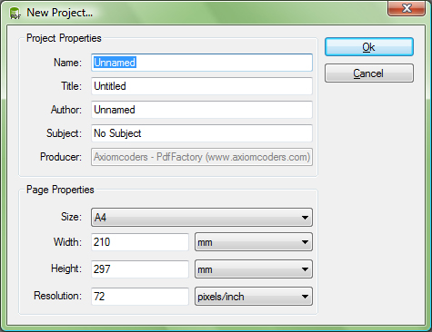

New Template Editor project can be created from File Menu or from File Toolbar by selecting New Project... command

New project dialog box consists few options that you must follow. First you need to enter a name, title, author, subject of the project or leave it untitled, but you can't leave it empty. Next there is size of the page, here you can chose predefined sizes such as (A4, A5, Letter, 1024x768, 800x600, 640x480). If you want specific size, than you enter sizes in the fields Width and Height, give them unit in what the dimensions are, and you can chose from (Inch, mm, cm, pixel). Than if you need different precision you can enter Resolution of your choice.